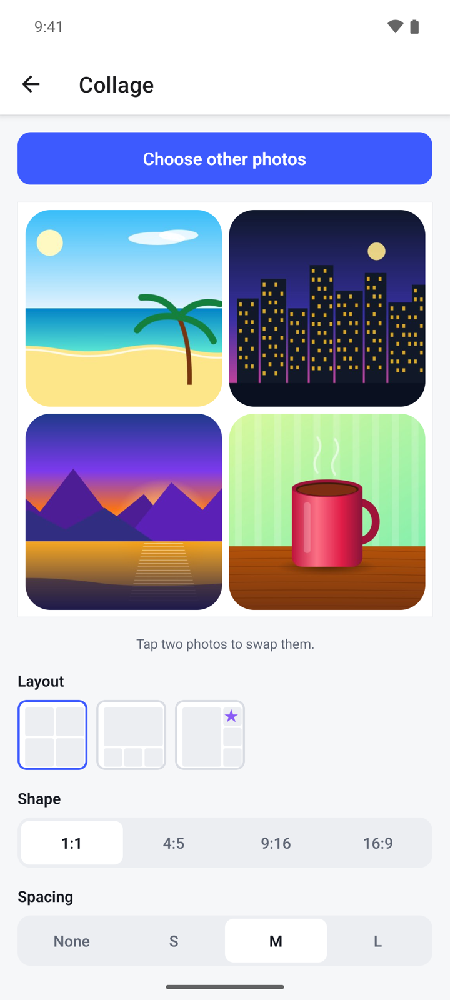

Was die App kann
Photo & Image Toolkit vereint fünf alltägliche Foto-Werkzeuge in einer App: Komprimieren, Skalieren und Zuschneiden, Umwandeln, Collage und Hintergrund entfernen. Jedes Werkzeug arbeitet direkt auf Ihrem Handy und speichert eine neue Kopie, sodass Ihr Originalfoto nie verändert wird. Die App gibt es in 14 Sprachen und folgt der Sprache Ihres Handys.
- Kein Konto nötig. Fotos werden auf Ihrem Gerät verarbeitet und nie hochgeladen.
- Die App sieht nur die Fotos, die Sie auswählen.
- Standort und Kameradaten werden aus den gespeicherten Kopien entfernt.
- Kostenlos mit Werbung. Ein einmaliger Kauf von Premium entfernt die Werbung und bringt die Stapelverarbeitung dazu.
Erste Schritte
- Öffnen Sie Photo & Image Toolkit. Der Startbildschirm zeigt die fünf Werkzeuge.
- Tippen Sie auf ein Werkzeug, zum Beispiel Compress.
- Tippen Sie auf Select photo und wählen Sie ein Foto aus. Die App fragt nicht nach Zugriff auf Ihre gesamte Fotomediathek.
- Sobald das Ergebnis fertig ist, tippen Sie auf Save, um es als neues Foto zu speichern, oder auf Share, um es an eine andere App zu senden.

Foto komprimieren
- Tippen Sie auf dem Startbildschirm auf Compress und dann auf Select photo.
- Wählen Sie unter Quality die Stufe Low, Medium oder High. Mit Low wird die Datei am kleinsten.
- Wählen Sie unter Output format die Option JPEG oder WebP.
- Soll die Datei unter einer bestimmten Größe bleiben, geben Sie diese in KB unter Target size (optional) ein.
- Tippen Sie auf Compress. Sie sehen das Foto vorher und nachher, mit der Originalgröße, der neuen Größe und der Ersparnis.
- Tippen Sie auf Save oder Share.

Lässt sich die Zielgröße nur mit starkem Qualitätsverlust erreichen, weist die App Sie darauf hin und liefert das kleinstmögliche Ergebnis.
Foto skalieren, zuschneiden, drehen oder spiegeln
- Tippen Sie auf Resize & Crop und dann auf Select photo.
- Lassen Sie unter Crop ratio die Einstellung Free oder wählen Sie ein festes Format wie 1:1, 4:5 oder 16:9.
- Ziehen Sie im Zuschneiderahmen, um ihn zu verschieben. Ziehen Sie den blauen Punkt in der Ecke, um ihn größer oder kleiner zu machen.
- Tippen Sie auf ⟲ Left oder ⟳ Right, um das Foto zu drehen. Tippen Sie auf eine Flip-Taste, um es zu spiegeln.
- Wählen Sie unter Resize die Option Original, um die Größe beizubehalten, Pixels, um eine Breite einzugeben, %, um prozentual zu skalieren, oder Presets für fertige Größen für soziale Medien und Dokumente.
- Wählen Sie unter Format die Option JPEG, PNG oder WebP.
- Prüfen Sie in der Zeile Output die endgültige Größe und tippen Sie dann auf Apply.
- Tippen Sie auf Save oder Share.

In JPEG, PNG oder WebP umwandeln
- Tippen Sie auf Convert und dann auf Select photo. Fotos im Format HEIC, PNG, WebP und JPEG lassen sich öffnen.
- Wählen Sie unter Convert to die Option JPEG, PNG oder WebP. Ein kurzer Hinweis unter den Tasten erklärt, wofür sich das jeweilige Format eignet.
- Wählen Sie bei JPEG und WebP eine Quality: Low, Medium oder High.
- Tippen Sie unten auf der Karte auf die Taste Convert to, zum Beispiel Convert to JPEG.
- Vergleichen Sie die Größe vorher und nachher und tippen Sie dann auf Save oder Share.

Hat das Foto transparente Bereiche und Sie wählen JPEG, warnt die App Sie, dass diese weiß werden.
Collage erstellen
- Tippen Sie auf Collage und dann auf Select photos. Wählen Sie 2 bis 9 Fotos aus.
- Um die Reihenfolge zu ändern, tippen Sie in der Vorschau auf ein Foto und dann auf das Foto, mit dem es den Platz tauschen soll.
- Wählen Sie unter Layout, wie die Fotos angeordnet werden. Layouts mit ★ gehören zu Premium.
- Wählen Sie unter Shape die Option 1:1, 4:5, 9:16 oder 16:9.
- Stellen Sie den Spacing zwischen den Fotos, die Corners (Square, Soft oder Round) und die Farbe unter Background ein.
- Wählen Sie unter Format die Option JPEG oder PNG.
- Tippen Sie auf Create collage und dann auf Save oder Share.

Hintergrund entfernen
- Tippen Sie auf Remove Background und dann auf Select photo. Die App schneidet das Motiv sofort frei. Am besten klappt das mit einem klaren Motiv: einer Person, einem Haustier oder einem Produkt.
- Tippen Sie auf Before und After, um den Ausschnitt mit dem Original zu vergleichen.
- Wählen Sie unter Background, was hinter dem Motiv erscheint:
- Transparent: wird als transparentes PNG gespeichert.
- Colour: Wählen Sie eine der angezeigten Farben.
- Photo: Tippen Sie auf Choose background photo und wählen Sie ein anderes Foto.
- Tippen Sie auf Save oder Share.

Mit Premium können Sie das Motiv auch auf einen Farbverlauf setzen.
Das Freistellen geschieht auf Ihrem Gerät. Bei der ersten Nutzung dieses Werkzeugs muss Ihr Handy eventuell kurz online sein, um das Freistellungsmodell über Google Play services zu laden.
Einstellungen öffnen
- Tippen Sie auf dem Startbildschirm oben rechts auf Settings.
- Unter Premium sehen Sie, ob Sie Free oder Premium nutzen. Tippen Sie auf Upgrade to Premium oder auf Restore purchases.
- Unter Privacy öffnen Sie die Privacy Policy oder die Terms of Use. In manchen Ländern sehen Sie außerdem Ad privacy choices, wo Sie Ihre Einwilligung für Werbung ändern können.
Premium
Premium ist eine einmalige Zahlung, kein Abo. Tippen Sie auf dem Startbildschirm auf ★ Go Premium oder in den Settings auf Upgrade to Premium. Premium bietet Ihnen:
- Keine Werbung.
- Stapelverarbeitung mit der Taste Batch: bis zu 20 Fotos auf einmal komprimieren oder umwandeln oder bis zu 10 freistellen. Auch mehrere Fotos gleichzeitig zu skalieren ist möglich.
- Export in hoher Auflösung: bis zu 8192 px an der längsten Seite statt 4096 px, bei Freistellungen bis zu 4096 px statt 2048 px, und größere Collagen.
- Smooth edges für weichere Kanten bei Freistellungen in Remove Background sowie Hintergrundvorlagen mit Farbverlauf.
- Zusätzliche Collage-Layouts.
Haben Sie Premium schon einmal gekauft, tippen Sie in den Settings oder auf dem Premium-Bildschirm auf Restore purchases.
Fragen
Verändert die App mein Originalfoto? Nein. Jedes Werkzeug speichert eine neue Kopie. Unter Android landen die Kopien im Album Photo Toolkit in Ihrer Galerie.
Werden meine Fotos hochgeladen? Nein. Alle fünf Werkzeuge laufen auf Ihrem Handy, auch die Hintergrundentfernung.
Warum hat mein gespeichertes Foto weniger Pixel als das Original? Die kostenlose Version speichert Fotos mit bis zu 4096 px an der längsten Seite und Freistellungen mit bis zu 2048 px. Größere Fotos werden verkleinert. Premium hebt diese Grenzen an.
Kann ich als HEIC speichern? Unter Android nicht. Sie können HEIC-Fotos öffnen und in JPEG, PNG oder WebP umwandeln.
Die Hintergrundentfernung zeigt einen Fehler. Was kann ich tun? Dieses Werkzeug braucht Google Play services. Prüfen Sie, ob Sie online sind und Google Play auf Ihrem Handy eingerichtet ist, und versuchen Sie es dann erneut.
Datenschutz
Ihre Fotos werden auf Ihrem Gerät verarbeitet und nie hochgeladen. Die kostenlose Version zeigt Werbung von Google AdMob. Lesen Sie die vollständige Datenschutzerklärung.